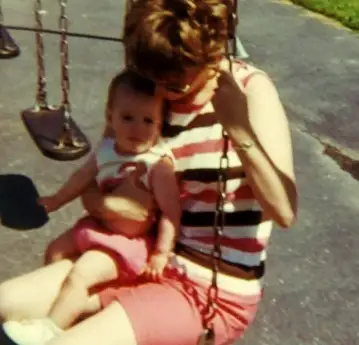
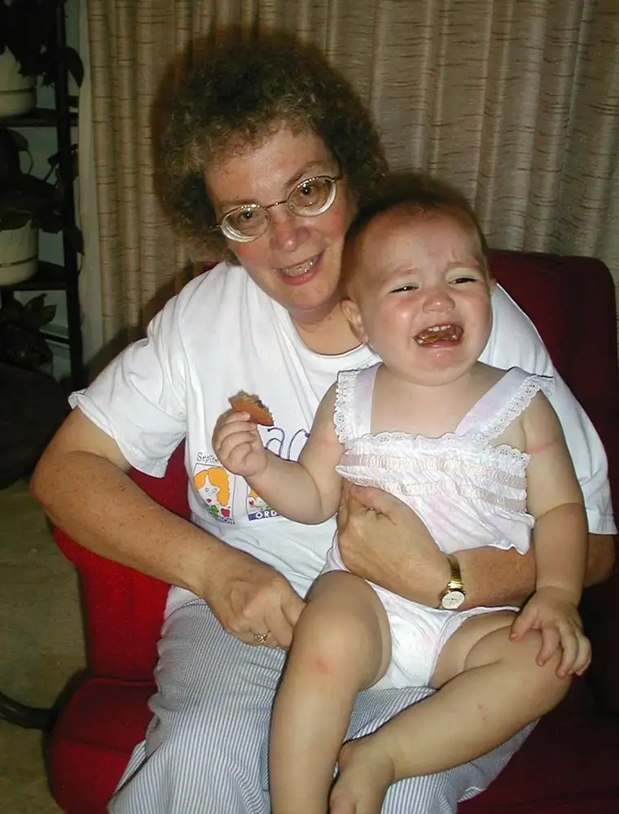

This Mother’s Day, my internal focus turned away from my own mothering, and more to my mother, who spent a quiet day three hours away, going to Mass, then bringing some gifts to her own mother, who is 98.
 |
| Mom and Me, circa 1969 |
{kind=link}
I wish we could have been together. Thankfully, I’ll see her later this week when I travel to her city to do an author visit at a neighboring school, named for one of the teachers who once taught her.
Nevertheless, she was on my mind as I went through the day, receiving love and a few gifts from my family here, including several boxes of chocolate (which have drawn lots of interest from the kids), a Cold Stone Creamery cake (chocolate no less), and a small pile of cards.
One of the cards carried such a beautiful message from my 12-year-old that I was left a puddling mess right there at the table. She seems to have inherited the gift of writing from the heart, and I have to say, it’s an amazingly touching thing to be on the receiving end of that.
It started this way:
“Mom, thank you for everything you do for me. I know a lot of the time I don’t show how much I love you or how thankful I am for the things you do, and that’s why I love today. Mother’s Day reminds me how much I really love you, and if you were gone, I don’t know what would happen. It’s too bad, though, once a year isn’t really enough to celebrate someone who cares for you and loves you every day of the year.”
A few sentences later, after apologizing for her sour attitude sometimes when it comes to the things that go undone in our busy, and often messy household, she added, “Please know that you are an amazing mom! I’d much rather have you be here for me emotionally than at home cooking and cleaning all of the time!”
She ended with saying sorry that she was not able to come up with the kind of “beautiful words you write,” and that’s when I lost it.
How much more beautiful can words be than when they come through honest humility, as these obviously did? As someone whose primary “love languages” are quality time and words, I was deeply moved, and filled up I’m sure for a good couple days or more.
But I can’t not see, even in her words, my own mother, who demonstrated those same things to me by caring less about appearances and more about tending the soul.
{kind=link}
So Mom, now it’s my turn. I am so grateful you are in my life. If I had to choose from a million moms and could see into each of their hearts, you’d be the one I’d pull from the crowd and wrap my daughter arms around.
{kind=link}
In many ways, it took becoming a mother myself for me to truly see just how amazing you are, and I’m eternally blessed by being your daughter. I love you!
 |
| Grandma Jane and Elizabeth, future writer of the heart |
{kind=link}
P.S. Speaking of mothering, winners of the recent book drawings for Marge Fenelon’s “Imitating Mary: Ten Marian Virtues for the Modern Mom,” are Lori and Ginny, who both commented on that post on Peace Garden Mama (an extra copy in my hands gave me the privilege of offering two). Congrats, and I hope you enjoy!